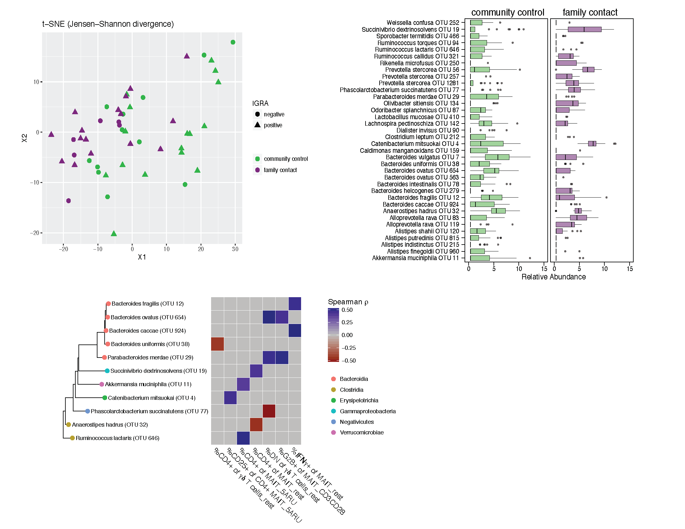

Code to reproduce Figure 5 from doi: 10.1172/jci.insight.121899

setwd("~/Desktop/Charles_MAIT/") #pick a directory
rm(list=ls())
library(plyr);library(ggtree);library(phyloseq);library(ggplot2);library(scales);library(grid)
library(Hmisc);library(gridExtra);library(scales);library(stringr);library(logistf)
library(coxphf);library(reshape2);library(ifultools);library(car);library(vegan)
library(gdata);library(chron);library(data.table);library(tidyr) #imports tibble
library(ggplot2);library(yingtools2);library(gridExtra);library(lubridate);library(dplyr)
library("pheatmap");library("RColorBrewer");library("genefilter");library(ggthemes)
library("reshape2");library("gridExtra");library("colorspace");library("lattice")
library("pracma");library("ComplexHeatmap");library("BiocParallel");library("viridis");library("circlize")
select <- dplyr::select
summarize <- dplyr::summarize
rownames_to_column <- tibble::rownames_to_column
phy_contacts <- readRDS("phy.JCI.RDS")
# Calculate bray curtis distance matrix
bray <- phyloseq::distance(phy_contacts, method = "bray")
# make a data frame from the sample_data
sampledf <- data.frame(sample_data(phy_contacts))
# Adonis test
library(vegan)
set.seed(12345678)
adonis2(bray ~ IGRA + sex + Group6_TB_category, data = sampledf)
Permutation test for adonis under reduced model Terms added sequentially (first to last) Permutation: free Number of permutations: 999
| Df | SumsOfSqs | MeanSqs | F.Model | R2 | Pr(>F) | |
|---|---|---|---|---|---|---|
| IGRA | 1 | 0.03927 | 0.01281 | 0.6705 | 0.851 | |
| sex | 2 | 0.17300 | 0.05644 | 1.4769 | 0.072 | . |
| Group6_TB_category | 1 | 0.21748 | 0.07095 | 3.7132 | 0.001 | *** |
| Residual | 45 | 2.63568 0.85981 | ||||
| Total | 49 | 3.06544 | 1.00000 | |||
| --- | ||||||
| Signif. codes: 0 ‘’ 0.001 ‘’ 0.01 ‘’ 0.05 ‘.’ 0.1 ‘ ’ 1 |
beta <- betadisper(bray, sampledf$Group6_TB_category)
permutest(beta)
Permutation test for homogeneity of multivariate dispersions Permutation: free Number of permutations: 999
| Df | Sum Sq | Mean Sq | F | N.Perm | Pr(>F) | |
|---|---|---|---|---|---|---|
| Groups | 1 | 0.00044 | 0.00044028 | 0.1967 | 999 | 0.663 |
| Residuals | 48 | 0.10747 | 0.00223889 |
```{r}
#docker run -v ~/Desktop/Charles_MAIT/:/home/linuxbrew/inputs -it biobakery/lefse bash
system("echo $PATH")
results_folder <- "~/Desktop/Charles_MAIT/"
#make names lefse-friendly for python scripts
taxa_names(phy_contacts)<-gsub('\\(','',taxa_names(phy_contacts))
taxa_names(phy_contacts)<-gsub(')','',taxa_names(phy_contacts))
taxa_names(phy_contacts)<-gsub(' ','_',taxa_names(phy_contacts))
taxa_names(phy_contacts)
phy.lefse<-phy_contacts
class <- "Group6_TB_category"
subclass<-NA
subject<-"sample"
anova.alpha<-0.01
wilcoxon.alpha<-0.01
lda.cutoff<-2.5
wilcoxon.within.subclass <- TRUE
one.against.one <- FALSE
mult.test.correction <- 0
make.lefse.plots <- FALSE
by_otus <- FALSE
#
sample.data <- phyloseq::sample_data(phy.lefse) %>% data.frame(stringsAsFactors = FALSE)
sample.data <- rownames_to_column(sample.data,var="sample")
#
keepvars <- c("sample","Group6_TB_category")
keepvars <- unique(keepvars[!is.na(keepvars)])
lefse.samp <- sample.data[, keepvars]
#
sample0 <- t(lefse.samp) %>% as.matrix()
colnames(sample0) <- sample0[1,]
sample0 <- as.data.frame(sample0) %>% t() %>% as.data.frame()
data0 <- otu_table(phy.lefse) %>% as.data.frame()
data1 <- data0 %>% as.data.table(keep.rownames=T) %>% t()
data2 <- rownames_to_column(as.data.frame(data1),var="sample")
pre.lefse <- right_join(sample0,data2,by="sample") %>% t()
rownames(pre.lefse) <- NULL
pre.lefse[1,1] <- "sample"
pre.lefse[2,1] <- "IGRA"
pre.lefse <- pre.lefse %>% t() %>% na.omit() %>% t()
#
write.table(pre.lefse,file =paste(results_folder,"lefse.txt",sep=""),sep = "\t",row.names = FALSE,col.names = FALSE,quote = FALSE)
#
opt.class <- paste("-c", which(keepvars %in% class))
opt.subclass <- ifelse(is.na(subclass), "", paste("-s", which(keepvars %in%
subclass)))
opt.subject <- ifelse(is.na(subject), "", paste("-u", which(keepvars %in%
subject)))
format.command <- paste(paste("format_input.py ",results_folder,"lefse.txt ",results_folder,"lefse.in",sep=""),
opt.class, opt.subclass, opt.subject, "-o 1000000")
system(format.command)
#
#docker run -v ~/Desktop/Charles_MAIT/:/home/linuxbrew/inputs -it biobakery/lefse bash
lefse.command <- paste(paste("run_lefse.py ","lefse.in " , "lefse.res",sep=""),
"-a", anova.alpha, "-w", wilcoxon.alpha, "-l", lda.cutoff,
"-e", as.numeric(wilcoxon.within.subclass), "-y", as.numeric(one.against.one),
"-s", mult.test.correction)
lefse.command
system(lefse.command)
lefse.out <- read.table(paste("lefse.res",sep=""), header = FALSE, sep = "\t")
names(lefse.out)<-c("taxon","log.max.pct","direction","lda","p.value")
(lefse.out<-na.omit(lefse.out))
Palette_LTBI_treatment <- c("#377eb8","#984ea3") #modify this
ltk<-as.character(lefse.out$taxon)
# ltk.list<-list()
# for (i in seq(1,length(ltk))){
# tmp<-strsplit(ltk[i],"_")
# ltk.list[[i]]<-tmp[[1]][2]
# }
# (ltk<-as.character(do.call('rbind',ltk.list)))
phy_ra_ltk<-prune_taxa(ltk,phy_contacts)
phy_ra_ltk_m<-psmelt(phy_ra_ltk)
Palette_FC_CC <- c("#00C000","#7F007F")
g2<-ggplot(phy_ra_ltk_m,aes(x=OTU,
y=Abundance,color=Group6_TB_category,
fill=Group6_TB_category))+
geom_boxplot(position=position_dodge(),
colour="black", # Use black outlines,
size=.3,alpha=0.5) + # Thinner lines
theme_base()+
xlab("")+
coord_flip()+ facet_wrap(~Group6_TB_category) +
scale_y_continuous(limits = c(0,15))
if(length(unique(lefse.out$direction))<3){
g2<-g2+scale_color_manual(values=c(Palette_FC_CC))+
scale_fill_manual(values=c(Palette_FC_CC))
}
print(g2)
# pdf('Correlated_FC-CC_0.01_LDA2.5_all.pdf', height = 8, width = 12)
# print(g2)
# dev.off()
common <-intersect(lefse.out$taxon,cor_ht_dt_w$taxon)
#big for loop
mainDir <- "~/Desktop/Charles_MAIT/"
subDir <- "DESeq_FC-CC_immune"
dir.create(file.path(mainDir, subDir), showWarnings = TRUE,recursive = TRUE)
results_folder <- paste(mainDir,subDir,sep="")
cor_ht_dt <- NULL
heat_dt <- data.frame(taxon = NULL, rho = NULL, effectors = NULL)
sample_variables(phy)
vars_to_keep <- c("il17m_5aru","il17m_dyna","cd4mil17_rest","cd8mil17_rest",
"dnmil17_rest","cd4mil17_5aru","cd8mil17_5aru","dnmil17_5aru" ,"cd4mil17_dyna",
"cd8mil17_dyna","dnmil17_dyna","cd4til17_rest","cd8til17_rest",
"dntil17_rest","cd4til17_dyna","cd8til17_dyna","dntil17_dyna")
effectors_all<- c(vars_to_keep)
for (effectors in effectors_all){
# Subset the samples
phy_var <- subset_samples(phy_contacts,!is.na(get_variable(phy_contacts, effectors)) | get_variable(phy_contacts, effectors)!="")
phy_var <- subset_samples(phy_var, get_variable(phy_var, effectors) != "na")
phy_var <- subset_samples(phy_var, get_variable(phy_var, effectors) != "")
sdat<-otu_table(phy_var) %>% as.data.frame()
xcor<-get_variable(phy_var, effectors)
c_th<-0.05
c_pvalue<-list()
c_estimate<-list()
for (ic in seq(1,nrow(sdat))){
ycor<-sdat[ic,]
cor.result<-cor.test(as.numeric(xcor),as.numeric(ycor),method = "spearman") #nonparametric = spearman
c_pvalue[[ic]] <- cor.result$p.value
c_estimate[[ic]] <- cor.result$estimate
}
c_pvalue<-do.call('rbind',c_pvalue)
c_estimate<-do.call('rbind',c_estimate)
isig<-which(c_pvalue <= c_th)
taxa_sig<-taxa_names(phy_var)[isig]
c_pvalue_sig<-c_pvalue[isig]
c_estimate_sig<-c_estimate[isig]
correlation_results<-data.frame(taxa_sig,c_pvalue_sig,c_estimate_sig)
names(correlation_results)<-c("taxon","pvalue","spearman_rho")
if(nrow(correlation_results) > 0){
correlation_results$rho<-as.numeric(correlation_results$spearman_rho)
correlation_results$taxon<-factor(correlation_results$taxon,
levels=correlation_results$taxon[order(correlation_results$spearman_rho)])
correlation_results$i_eff <- effectors
# Cut off for rho 0.4 <= spearman_rho & spearman_rho <= -0.4
correlation_results <- correlation_results[which(abs(correlation_results$spearman_rho) >= 0.2) ,]
if(nrow(correlation_results) > 0){
cor_ht_dt <- rbind(cor_ht_dt, correlation_results)
# barplot
pdf(paste(results_folder,paste0("bar_plot_spearman_coeff",effectors,".pdf"),sep="/"),height = 6, width = 10)
g1<-ggplot(data=correlation_results,aes(x=taxon, y=rho))+
geom_bar(stat="identity")+
coord_flip()+
theme_base()+
xlab("Species")+
ylab("Spearman - rho")
print(g1)
dev.off()
# code below is for heatmap
phy_sig_var <- prune_taxa(as.character(correlation_results$taxon), phy_var)
sig_data_c<-data.frame(otu_table(phy_sig_var))
y_eff <- as.numeric(as.character(get_variable(phy_sig_var, effectors)))
pnca_colors<-colorRamp2(c(min(log(y_eff+1)),
max(log(y_eff+1))), c("white", "blue"))
dist_to_use<-function(x) (1-dist(t(x)))
mat<-as.matrix(as.data.frame(sig_data_c))
mat2<-scale(t(mat), scale = T, center = T)
mat2<-t(mat2)
annotations<-data.frame(y_eff,as.character(get_variable(phy_var, "Group6_TB_category")))
names(annotations)<-c("effectors","group")#,"conventional_cd8mtreg")#,"IGRA")#,"group")#"cd8mtreg") #"TB_status","IGRA",
tmp_c <- sample_data(phy_var) %>% as.data.frame()
#tmp_c[order(tmp_c)$effectors,] #[order(sample_data(phy_var)$effectors),]
max_value <- max(as.numeric(as.character(get_variable(phy_var, effectors))))
#color_col = list(effectors = colorRamp2(c(0,max_value),c("white","#DC143C")),
#group = c("family_contact" = "#7F007F","community_control" = "#00C000"))
#color_col = list(effectors = colorRamp2(c(0,noquote(max(tmp_c$effectors))),c("white","#DC143C")), group = c("family_contact" = "#7F007F","community_control" = "#00C000"))
#ha_column = HeatmapAnnotation(annotations, col = color_col)
ha_column = HeatmapAnnotation(annotations)
ht1 = Heatmap(mat2, name = "Relative Abundance", column_title = NA, top_annotation = ha_column,
clustering_distance_rows = "euclidean",
clustering_method_rows = "complete",row_names_side = "left", km=1, color_space = "LAB",
col=viridis(11), row_dend_side="right",
clustering_method_columns = "ward.D",
width=4, row_names_max_width = unit(8, "cm"),show_column_names= F,
row_names_gp = gpar(fontsize = 9), cluster_columns = T,na_col="white")
ht_list = ht1
padding = unit.c(unit(2, "mm"), grobWidth(textGrob("jnbksdffsdfsfd_annotation_name")) - unit(1, "cm"),
unit(c(2, 2), "mm"))
pdf(paste(results_folder,paste0("heatmap_spearman_0.01_",effectors,".pdf"),sep="/"),height = 2.5, width = 11)
draw(ht_list, padding = padding)
dev.off()
}
}
}
# Reshape the dataframe for heatmap
cor_ht_dt <- cor_ht_dt[,c("taxon","rho","i_eff")]
# Convert long to wide format for phyloseq object
cor_ht_dt_w <- dcast(cor_ht_dt, taxon ~ i_eff, value.var="rho",fun.aggregate = mean)
cor_ht_dt_w[is.na(cor_ht_dt_w)] <- 0
######match tree with heatmap rownames
phy_sig<-prune_taxa(as.character(cor_ht_dt_w$taxon),phy_contacts)
row_den <- ape:::as.phylo(phy_tree(phy_sig))
# row_den <- as.dendrogram(hclust(dist(cor_data)))
# plot(row_den)
#r_order <- rev(row_den$tip.label)
cor_data <- cor_ht_dt_w
rownames(cor_data) <- cor_data$taxon
cor_data$taxon <- NULL
clust.col <- hclust(dist(t(cor_data)))
plot(clust.col)
col_den <- as.dendrogram(clust.col)
sig_data_c <- cor_data
mat<-as.matrix(sig_data_c)
mat2<-scale(t(mat), scale = F, center = F)
mat2<-t(mat2)
#rownames(mat2) <- cor_ht_dt_w$taxon
# #get data from ggTree
# d <- fortify(tr)
# dd <- subset(d, isTip)
# r_order <- dd$label[order(dd$y, decreasing=T)]
#
# mat3 <- mat2[match(r_order,rownames(mat2)),]
# Without phylogenetic tree clustering
sig_data_c <- cor_ht_dt_w[,2:ncol(cor_ht_dt_w)]
dist_to_use<-function(x) (1-dist(t(x)))
mat<-as.matrix(as.data.frame(sig_data_c))
mat2<-scale(t(mat), scale = F, center = F)
mat2<-t(mat2)
rownames(mat2) <- cor_ht_dt_w$taxon
rownames(mat2) <- gsub("\\s*\\w*$", "", rownames(mat2))
jet.colors <- colorRampPalette(c("#00007F", "blue", "#007FFF", "cyan", "#7FFF7F", "yellow", "#FF7F00", "red", "#7F0000"))
jet.colors <- colorRampPalette(c("red","grey", "darkblue"))
subsets <- levels(as.factor(cor_ht_dt$i_eff))
#annotation <- data.frame(subsets,c("CD4","CD4","CD8","CD8","DN","DN","CD4"),row.names = T)
#names(annotation) <- c("subset")
#ha_column = HeatmapAnnotation(annotation)
pdf(paste(results_folder,"/heatmap_spearman_all_effectors_no_tree",'.pdf',sep=""),height = 20, width = 10)
ht1 = Heatmap(mat2, name = "relativeAbundance", column_title = NA, #top_annotation = ha_column,
#clustering_distance_rows = "euclidean",clustering_method_rows = "complete",
row_names_side = "left", km=1, color_space = "LAB",
col=jet.colors(11), row_dend_side="right",
clustering_method_columns = "ward.D",cluster_rows = F,
width=4, row_names_max_width = unit(8, "cm"),show_column_names= T,
row_names_gp = gpar(fontsize = 9), cluster_columns = T,na_col="white")
ht_list = ht1
draw(ht_list)
dev.off()
# pdf("Tree.physig.pdf",height = 9.5,width = 20)
# plot_tree(phy_sig, size="abundance", color="Phylum",label.tips = "taxa_names",
# justify = "yes please")
# dev.off()
common <-intersect(lefse.out$taxon,cor_ht_dt_w$taxon)
phy_common <- prune_taxa(taxa = common,phy_contacts)
#Phylogenetic Tree
phy_sig<-prune_taxa(as.character(cor_ht_dt_w$taxon),phy_contacts)
p.species <- phy_common
library(yingtools2)
library(ggtree)
tr <- phy_tree(p.species)
spec <- as.data.frame(get.tax(p.species))
gt <- ggtree(tr, branch.length = "y",ladderize = T) %<+% spec
gd <- gt$data
data_eff <- cor_ht_dt_w
rownames(data_eff) <- cor_ht_dt_w$taxon
data_eff$taxon <- NULL
data_eff <- as.matrix(data_eff)
#data_eff %>% View
g1 <- gt + geom_tippoint(aes(color=Order),size=3) + geom_tiplab(size =3)
# data_eff_cd4 <- data_eff[,1:8]
# data_eff_cd8 <- data_eff[,9:15]
g <- gheatmap(g1,data_eff,offset=2.5, width=2,colnames_angle=-45,hjust=0,font.size = 5) +
scale_fill_gradient2(low = "darkred", mid = "grey",high = "darkblue")
print(g)
pdf(paste(results_folder,"gg.tree.FC_CC_0.01_DESeq",'.pdf',sep=""),height = 1, width = 10)
print(g)
dev.off()
#tsne plots
library(phyloseq)
library(tsnemicrobiota)
library(ggplot2)
tsne_res <- tsne_phyloseq(phy_contacts, distance='jsd',
perplexity = 8, verbose=0, rng_seed = 3901,dimensions=3)
# Plot the results.
#sample_data(phy_contacts)$cd4m_5aru <- as.numeric(as.character(sample_data(phy_contacts)$cd4m_5aru))
plot_tsne_phyloseq(phy_contacts, tsne_res,
color = 'Group6_TB_category',shape="IGRA", title='t-SNE (jsd)') +
geom_point(size=3) + scale_color_manual(values=c(Palette_FC_CC))+
scale_fill_manual(values=c(Palette_FC_CC))